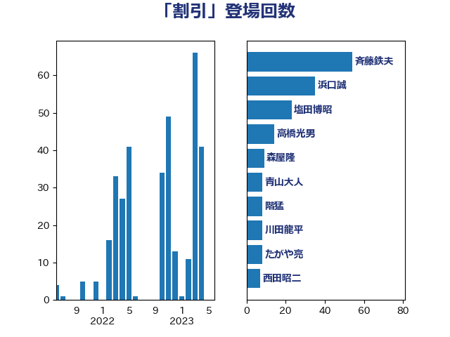

単語「割引」

| 斉藤鉄夫 | 公明党 | 54 回 |
| 浜口誠 | 国民民主党 | 35 回 |
| 塩田博昭 | 公明党 | 23 回 |
| 高橋光男 | 公明党 | 14 回 |
| 森屋隆 | 立憲民主党 | 9 回 |
| 青山大人 | 立憲民主党 | 8 回 |
| 階猛 | 立憲民主党 | 8 回 |
| 川田龍平 | 立憲民主党 | 8 回 |
| たがや亮 | れいわ新選組 | 8 回 |
| 西田昭二 | 自由民主党 | 7 回 |
| 市村浩一郎 | 日本維新の会 | 6 回 |
| 芳賀道也 | 国民民主党 | 5 回 |
| 福島伸享 | 無所属 | 5 回 |
| 白石洋一 | 立憲民主党 | 5 回 |
| 梅村聡 | 日本維新の会 | 4 回 |
| 岸田文雄 | 自由民主党 | 4 回 |
| 長浜博行 | 無所属 | 3 回 |
| 石井浩郎 | 自由民主党 | 3 回 |
| 山本剛正 | 日本維新の会 | 3 回 |
| 金城泰邦 | 公明党 | 2 回 |
| 豊田俊郎 | 自由民主党 | 2 回 |
| 石井章 | 日本維新の会 | 2 回 |
| 河野太郎 | 自由民主党 | 2 回 |
| 山口那津男 | 公明党 | 2 回 |
| 吉田とも代 | 日本維新の会 | 2 回 |
| 佐藤英道 | 公明党 | 2 回 |
| 伊藤孝恵 | 国民民主党 | 2 回 |
| 阿部知子 | 立憲民主党 | 1 回 |
| 長谷川英晴 | 自由民主党 | 1 回 |
| 里見隆治 | 公明党 | 1 回 |
| 神津たけし | 立憲民主党 | 1 回 |
| 石川博崇 | 公明党 | 1 回 |
| 石井啓一 | 公明党 | 1 回 |
| 田村智子 | 日本共産党 | 1 回 |
| 渡辺猛之 | 自由民主党 | 1 回 |
| 泉田裕彦 | 自由民主党 | 1 回 |
| 永井学 | 自由民主党 | 1 回 |
| 森田俊和 | 立憲民主党 | 1 回 |
| 柴田巧 | 日本維新の会 | 1 回 |
| 柳ヶ瀬裕文 | 日本維新の会 | 1 回 |
| 本村伸子 | 日本共産党 | 1 回 |
| 木村英子 | れいわ新選組 | 1 回 |
| 日下正喜 | 公明党 | 1 回 |
| 後藤茂之 | 自由民主党 | 1 回 |
| 平林晃 | 公明党 | 1 回 |
| 山田勝彦 | 立憲民主党 | 1 回 |
| 山添拓 | 日本共産党 | 1 回 |
| 山井和則 | 立憲民主党 | 1 回 |
| 小野泰輔 | 日本維新の会 | 1 回 |
| 小倉將信 | 自由民主党 | 1 回 |
| 寺田稔 | 自由民主党 | 1 回 |
| 宮路拓馬 | 自由民主党 | 1 回 |
| 宮本岳志 | 日本共産党 | 1 回 |
| 吉井章 | 自由民主党 | 1 回 |
| 伴野豊 | 立憲民主党 | 1 回 |